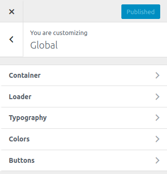
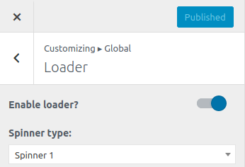
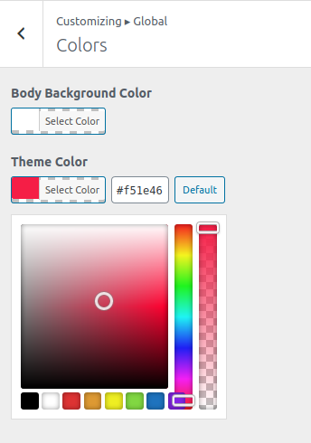
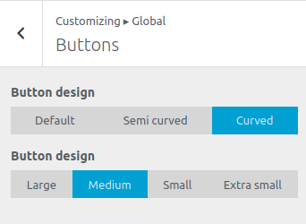

To work on this option, go to Catmandu Pro -> Theme Customizer
Global options allows you to override colors, containers, typography, buttons and loaders of overall site from one setting.

Container
In this section you can customize overall container width of your site. Default is set to 1230.
Types of Layouts supported:
- Boxed - Show the layout of selected page in boxed layout.
- Full width - Show the layout of selected page in full width.
You can override different layouts for different pages. Like blog layouts, page layouts, single post layouts etc.

Loader
- Enable loader? - Enable/disable loader on the site.
- Spinner type: - Select the type of spinner you want while laoding the site

Typography
You can control individual body typography or individual type of heading typography ranging from ( H1 to H6 ). This setting includes following:
- Body Font - Change the
font family and variantof the whole site. - Heading Font: H1 - Change the
font family, variant and font sizeof theH1tag. - Heading Font: H2 - Change the
font family, variant and font sizeof theH2tag. - Heading Font: H3 - Change the
font family, variant and font sizeof theH3tag. - Heading Font: H4 - Change the
font family, variant and font sizeof theH4tag. - Heading Font: H5 - Change the
font family, variant and font sizeof theH5tag. - Heading Font: H6 - Change the
font family, variant and font sizeof theH6tag.

Colors
Colors gives you capability to customize the background and theme scheme of the whole site.
- Body Background Color - Change the background color of the whole site.
- Theme Color - Change the color scheme of the whole site.
redis the default color scheme. Changing this will change the color and background color of all the elements

Buttons
Buttons gives you capability to customize the button size and design on the overall site.
- Button design - Change the button design ranging from
default, semi curved and curved. - Button size - Change the size of the button from
large to extra small
